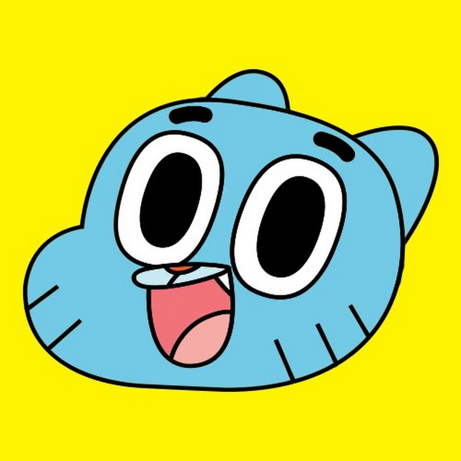

O Incrível Mundo de Gumball
O Incrivel Mundo de Gumball (em inglês: The Amazing World of Gumball) é uma série de desenho animado britânico-americana criada por Ben Bocquelet para o Cartoon Network. A série gira em torno de Gumball Watterson, um gato azul de 12 anos de idade, que frequenta a escola secundária na cidade fictícia de Elmore. Acompanhado por seu irmão peixinho, Darwin Watterson, os dois frequentemente se veem envolvidos em várias confusões em diversos locais da cidade, durante o qual eles interagem com os outros membros da família - a irmã, Anais Watterson e os pais Nicole Watterson e Richard Watterson acompanhados de outros personagens secundários.
Ao mesmo tempo que desenvolvia a série, Ben Bocquelet reciclou vários conceitos de projetos anteriores que foram rejeitados por diversos meios e fez a premissa ser uma mistura de "série familiar e série colegial", e assim quando apresentou o seu projeto, o Cartoon Network ficou extremamente interessado. Ele preparou O Incrível Mundo de Gumball, especificamente para o canal e quando o projeto foi aceito, Daniel Lennard foi contratado imediatamente como produtor executivo. É a primeira série a ser produzida pelo Cartoon Network Development Studio Europe, e atualmente é co-produzida com o Studio SOI e Hanna-Barbera Studios Europe. A série tem uma característica única porque é feita usando diferentes estilos e técnicas (estilizado com animação feita á mão, fantoches, CGI realista, stop-motion, etc.). A série foi produzida principalmente pelo então Cartoon Network Development Studio Europe, e foi exibida pela primeira vez em 3 de maio de 2011.[3] Antes mesmo de sua estreia, uma segunda temporada com 40 episódios foi confirmada em março de 2011.